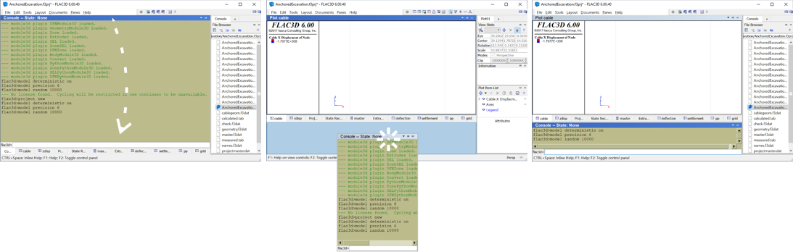

移动


图 1：控制台窗格从选项卡组中分离，并移动到主窗口中的新空间。左：单击并拖动窗格标题栏。中：窗格位于空的目标空间上方（以蓝色高亮显示），并释放鼠标。右：窗格停靠在新位置。
无论是浮动还是停靠，窗格都可通过在其标题栏上单击并拖动来移动。
如果窗格处于停靠状态，以这种方式“抓取”的窗格将与其当前位置分离。如果窗格处于浮动状态，它只会随鼠标开始移动。
如果在程序窗口内移动鼠标，程序界面将以蓝色高亮显示被抓取窗格的预期“落脚”位置。这将以以下两种可能方式之一发生。
- 当位于程序组件之间的边界处或非常接近边界时，界面会将各组件滑开，为正在移动的窗格腾出新的空间；该空白空间即蓝色高亮显示的位置。
- 如果鼠标位于某个窗格上方，该窗格将以蓝色高亮显示，表示正在移动的窗格将与其下方的窗格堆叠在一起。
窗格不能堆叠在控制面板上。移动窗格时，如果鼠标位于控制面板上方，则不会高亮显示任何内容。
当目标位置已定位到预期的新位置时，释放鼠标即可完成移动。
此处放置移动到空白位置的图片
| 这些内容对您有帮助吗？… | FLAC3D © 2019, Itasca | 原文更新于 2020 年 10 月 8 日 |
| 版权与免责声明 | ||